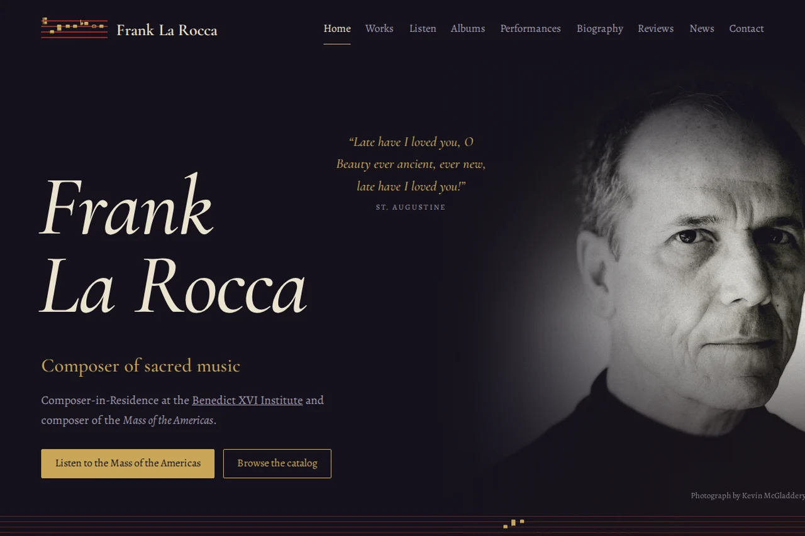
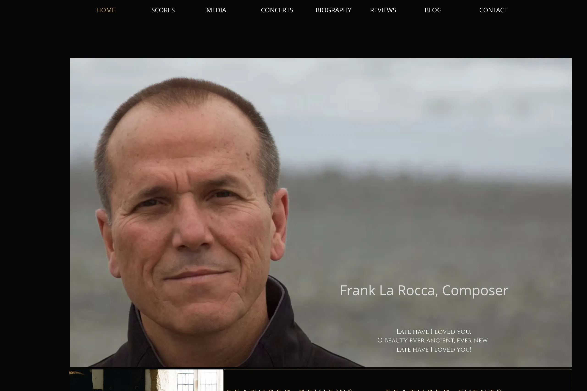

Drag the handle, or use the arrow keys, to compare before and after.
Show both versions side by side
Composer and Music Publishing
Frank La Rocca
Composer Frank La Rocca needed a website that brought together his compositions, recordings, scores, and press coverage.
What I built
I organized his catalog of 59 works into individual pages, with recordings, score information, and program notes.
The site also includes a discography, a press section, a downloadable press kit, and a custom visual mark based on musical material from the Miserere.
- 59 compositions
- Recordings and scores
- Discography
- Press kit
My website has been transformed thanks to the excellent design and building services of Andrew Likoudis. Any other Catholic creatives looking to build or refresh their online presence should consider his services. The cost was very reasonable and his customer service was exemplary.
Frank La Rocca, Composer-in-Residence, Benedict XVI Institute